Connecting to Your TEMPEST CubeSat
The TEMPEST image ships pre-provisioned: instead of joining an external wifi
network, each Pi Zero W broadcasts its own WiFi Access Point that workshop
attendees connect to directly. For a fleet of 25 units, you'll see
TEMPEST-1 through TEMPEST-25 advertised on the air — one SSID per
satellite, matching its hostname.
Connecting from Your Laptop
- Open your laptop's wifi settings.
- Find the SSID matching the TEMPEST unit you want to use (e.g.
TEMPEST-3). - Join using the shared workshop key:
Hack Space(default — your instructor may have rotated it). - NetworkManager on the Pi runs DHCP + NAT in
sharedmode, so your laptop automatically picks up a lease in the10.42.0.0/24range. - SSH into the satellite at its AP gateway address:
bash ssh tempest@10.42.0.1Default SSH credentials:tempest/tempest. Note that these are not the WiFi key — the AP password (Hack Space) gets you onto the network, the login above gets you a shell.
The Pi Zero W has a single radio, so each TEMPEST is its own isolated network — you can only be connected to one satellite at a time.
Rotating the AP Password
Once SSH'd in, change the PSK with:
sudo nmcli con modify tempest-ap wifi-sec.psk "new-password-here"
sudo nmcli con down tempest-ap && sudo nmcli con up tempest-ap
The down/up cycle is required — modifying the connection alone does not push the new key to the running AP. Every connected client (including your current SSH session) drops and must reconnect with the new key.
To check what the current PSK is set to (run as root for -s):
sudo nmcli -s con show tempest-ap | grep 802-11-wireless-security.psk:
Querying the AP Over Radio
If the satellite is in radio range but you can't see its SSID for any reason, the ground station can ask the FSW directly:
WIFI_INFO
The satellite responds with a WIFI telemetry packet containing the active
SSID (32 bytes) and IPv4 address (15 bytes). See
Command Protocol and the
Telemetry Reference.
Imaging a Fresh microSD Card
If you're setting up a new TEMPEST from scratch (e.g. replacing a damaged SD
card or upgrading the image), use Raspberry Pi Imager:
- Download and install Raspberry Pi Imager for your OS.
- Download a TEMPEST image:
- TEMPEST v1.1:
Tempest_v1.1.img
—
SHA256: 1b8bcd935839535602cd83294fcc94d98414a8966752e596f9455d1c1249bfef
- TEMPEST v1.1:
Tempest_v1.1.img
—
- Take the microSD card out of TEMPEST by removing the four T8 screws on the X+ Solar Panel (the panel to your left when facing the RBF pin / charging port).
-
In
Raspberry Pi Imager, chooseCHOOSE OS→Use customand select the downloaded.imgfile, then choose your microSD card underCHOOSE STORAGE.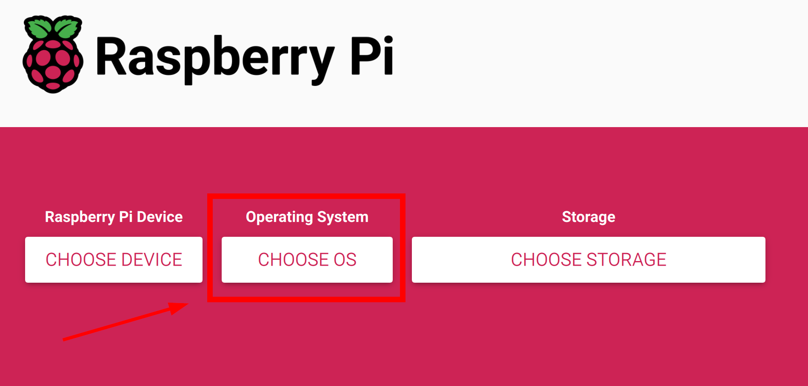
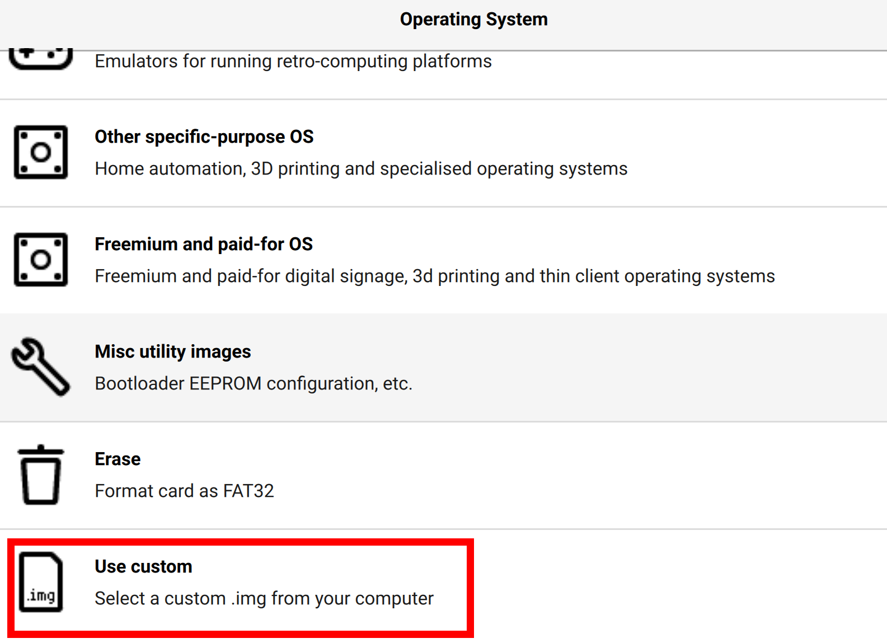
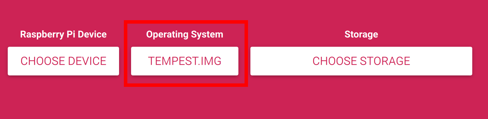
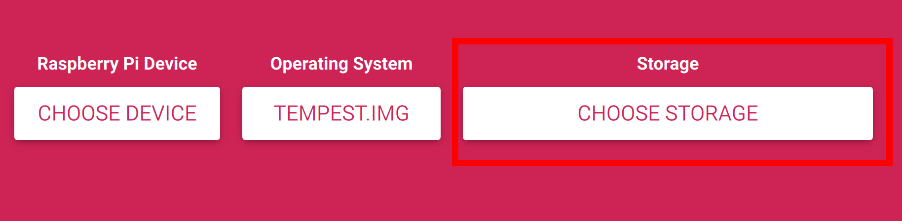
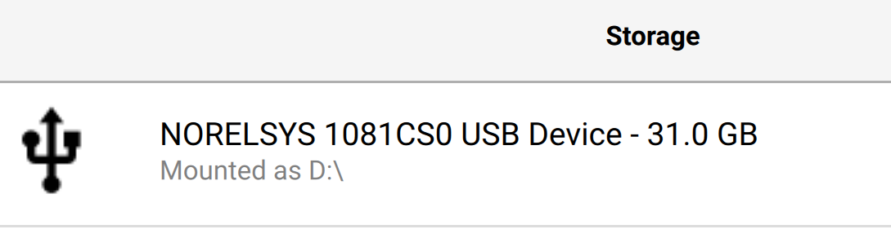
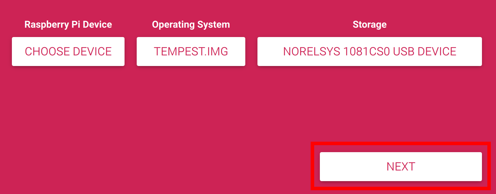
-
Click
NEXT, thenEDIT SETTINGS.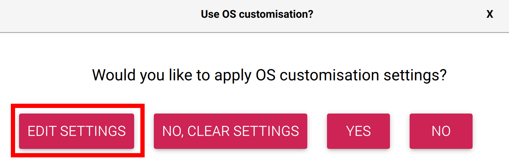
-
Configure the customizations. The image ships with the AP, SSH, and the FSW already provisioned — you only need to set the hostname:
-
Hostname: set to
TEMPEST-NwhereNis a unique integer in your fleet (1–25). This is critical: the FSW derives the radio node address from the integer at the end of the hostname (int(hostname.split("-")[1]) * 10), so two units with the same hostname will collide on the air. Make sure every TEMPEST in your fleet has a differentN.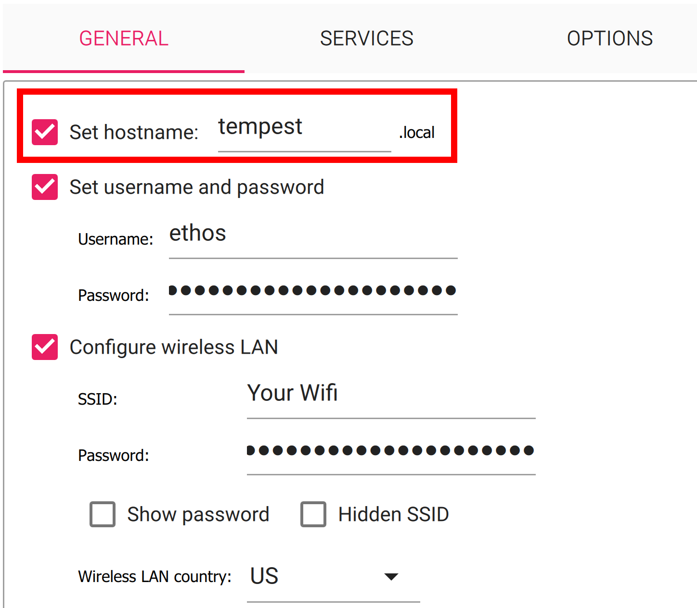
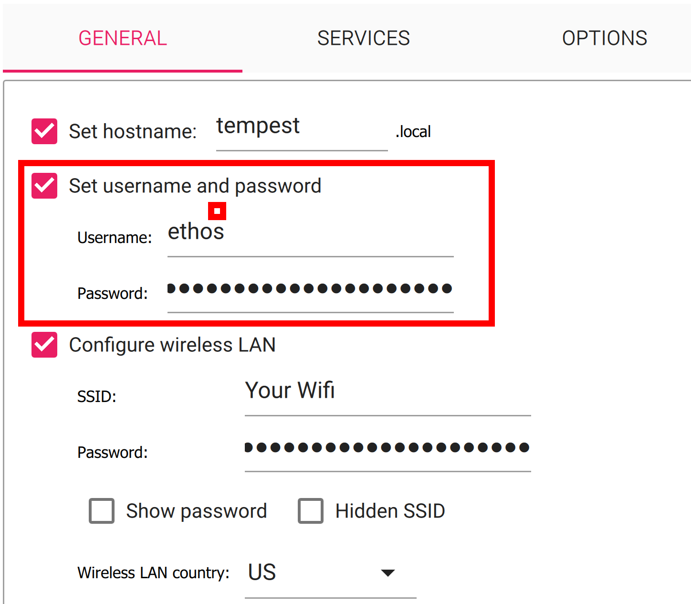
-
Username/password: leave at defaults (
tempest/tempest). If you change the username here, that's fine —install.shrecords the FSW directory by absolute path when it builds the service unit, so the service works under any home directory. The username itself isn't hardcoded anywhere in the FSW.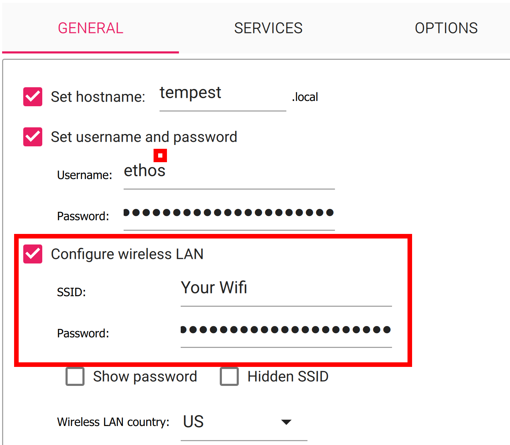
-
WiFi / SSH: skip these. The image is already configured to broadcast the
tempest-apaccess point on first boot and SSH is already enabled. Do not provide an external wifi SSID — the Pi Zero W has a single radio and a configured client network can prevent the AP from coming up.
-
-
SAVEthe customizations, thenYESto apply, thenYESto confirm overwriting the card.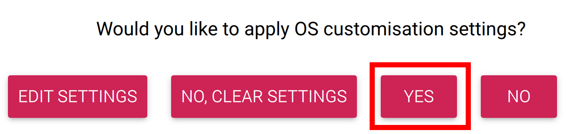
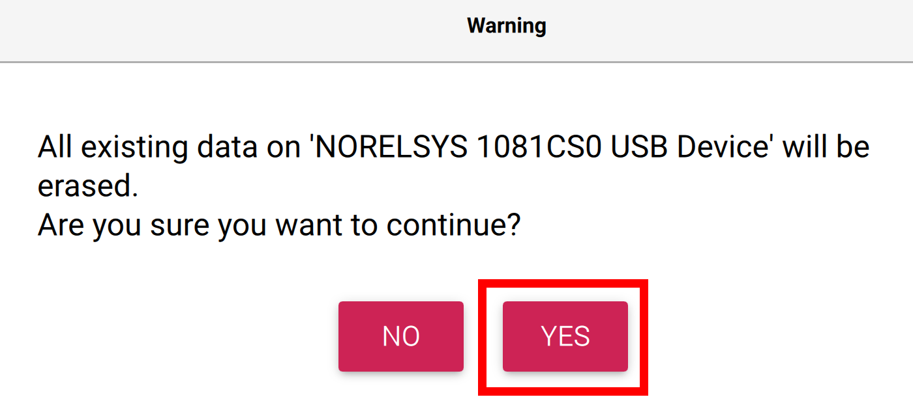
-
Wait for
Raspberry Pi Imagerto write and verify the image.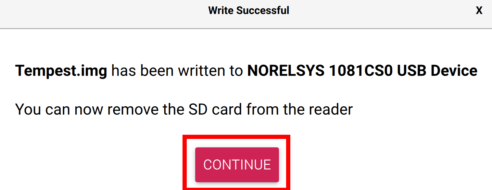
-
Eject the microSD card, reinstall it in the Pi Zero W, and power the satellite up. The Pi will shut down after ~30 seconds on first boot — this is expected. Insert and remove the RBF pin to reboot it.
- After a few minutes the AP will be live. Look for the
tempest-apSSID (matching the hostname you set, e.g.TEMPEST-3) from your laptop and follow the Connecting from Your Laptop steps above.
Recovering an Unreachable Unit
If a satellite's AP is misconfigured or you've forgotten the PSK and can't SSH in:
- Power the Pi off, pull the microSD card, and mount it on your laptop.
- Edit
/etc/NetworkManager/system-connections/tempest-ap.nmconnection— adjust thessidorpskfield directly. - Reinsert the card and boot the Pi.
Alternatively, with physical access to the Pi (USB OTG keyboard + a USB→HDMI
adapter), log in directly on the console and run the nmcli con modify
commands from the Rotating the AP Password
section above.